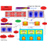
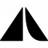

ArkOS
arkOS è un sistema operativo leggero per Raspberry Pi per ospitare in modo sicuro i tuoi siti, email, file e altro.

Autistici/Inventati
Una vasta gamma di servizi per la privacy, inclusi hosting, VPN, email, IM e altro.


Bitmessage
Servizio di messaggistica P2P criptato e decentralizzato, basato sulla tecnologia Bitcoin.

Byzantium
Byzantium è una distribuzione live di Linux che offre una mesh network di semplice utilizzo.


Cjdns
Cjdns è un protocollo di rete, un sistema di regole digitali per scambio di messaggi tra computer. "Invece di permettere agli altri c…


DragonFly BSD
DragonFly BSD è un sistema operativo libero Unix-like creato come fork di FreeBSD 4.8. Matthew Dillon, sviluppatore Amiga tra fine an…


eCryptfs
Stacked filesystem per GNU/Linux in ambito enterprise, criptato e conforme agli standard POSIX.


FreedomBox
FreedomBox integra protezioni per la privacy per server personali basati su software libero.


Freifunk
Un'iniziativa non commerciale di origine popolare per supportare reti radio libere in tutto il mondo.

Gajim
Client di messaggistica istantanea leggero e veloce per GNU/Linux e Windows—supporto OTR via plugin.


GNU Privacy Guard
Implementazione libera di OpenPGP per vari programmi, inclusi Thunderbird/Icedove.


GPG for Android
Un port per Android dell'intera suite GnuPG 2.1 .
Gnu Privacy Guard (GPG) ti dà accesso all'intera suite di crittografia Gnu…

Gpg4win
Gpg4win è un pacchetto di installazione per Windows (XP, Vista, 7 e 8) con strumenti e manuali per cifrare email e file a nome della …


HTTPS Everywhere
Cripta le tue comunicazioni con molti siti internet forzando una connessione HTTPS.



IndiMail
Piattaforma di messaggistica molto scalabile e configurabile basata sull'MTA qmail.


JonDo Live CD
Live CD/USB basato su Debian con strumenti preconfigurati per una navigazione anonima e molto altro.


Kopete
Client multiprotocollo di messaggistica istantanea flessibile ed estensibile per uso personale o aziendale.


Litecoin
Litecoin (simbolo : Ł ; codice : LTC) è una criptovaluta peer-to-peer e progetto open source pubblicato con licenza MIT/X11. Ispirato…


Mozilla Firefox
Browser web veloce, flessibile e sicuro con un vivace ecosistema di componenti aggiuntivi.

Mozilla Thunderbird
Applicazione per email multipiattaforma con supporto alla cifratura tramite il componente aggiuntivo Enigmail.


Namecoin
Sistema DNS distribuito per i domini di primo livello .bit, basato sulla tecnologia Bitcoin.

NetBSD
NetBSD è un sistema operativo Unix-like open source che discende dalla Berkeley Software Distribution (BSD), una derivata di Unix svi…


Open Source Routing Machine
La Open Source Routing Machine (OSRM) è un'implementazione in C++ di un motore per mappe ad alte prestazioni per trovare i percor…


OsmAnd
OsmAnd (OSM Automated Navigation Directions) è un'applicazione per mappe e navigazione che usa i dati di OpenStreetMap.


Qubes
Sistema operativo basato su Fedora/Xen progettato per offrire un'elevato livello di sicurezza grazie all'isolamento.


RetroShare
Piattaforma di comunicazione P2P sicura per chat, forum, VoIP, condivisione di file e altro.

Riseup
Strumenti di comunicazione sicuri per coloro che desiderano una società più libera.
Scientific Linux
Scientific Linux (SL) è una distribuzione Linux prodotta dal Fermi National Accelerator Laboratory (Fermilab) e l'Organizzazione …


Self-Destructing Cookies
Elimina automaticamente i cookie e il LocalStorage quando non vengono più usati dalle schede aperte del browser.
SME Server
Semplice distribuzione basata su CentOS con email preconfigurata, condivisione file, web server e altro.


Sylpheed
Applicazione per email multipiattaforma leggera e facile da usare, con supporto PGP integrato.



Tent
Protocollo per comunicazioni decentralizzate in tempo reale e archivizione di dati personali.

tinc
Software demone libero che usa il tunnelling e la cifratura pre creare una rete privata sicura.

Tor
Tor (precedentemente TOR, acronimo di The Onion Router)[citazione non necessaria] è un software libero per una navigazione anonima on…


Whonix
Sistema operativo VM-compatibile basato su Debian e Tor incentrato sull'anonimato, privacy e sicurezza.